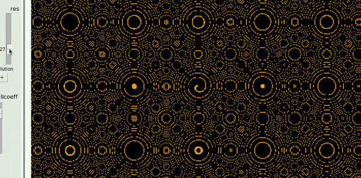
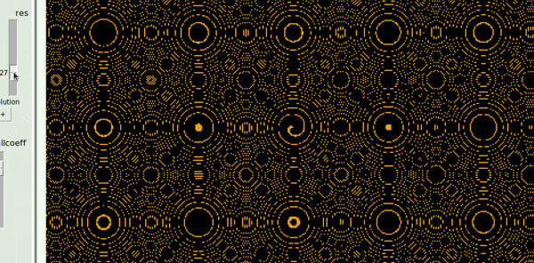

The non-existence of aliasing patterns
standing on the fickle edge, of existence and illusions.
I can never be lonely, for I am a reinterpretation,
merely a new body, born from another creation.
I am the utter nonsense, the artefact that you see,
the uncanny consequence, of your sampling frequency.
What am I ?
Now either you got the answer right, or you're just confused. Say we have a spiral, for example. Such as the one below, which, in aesthetic-functions syntax, is written using the following formula:
 From there, let us consider the set of pixels (i,j) such that:
From there, let us consider the set of pixels (i,j) such that:
 Where width is a parameter between 0 and 255. This formula yields the following:
Where width is a parameter between 0 and 255. This formula yields the following:
 Notice how the lines are getting closer and closer as they get
further away from the center. Eventually, the gap between two consecutive lines
will be less than a pixel. So if we zoom out, what will we see ?
Apart from the center, the spiral will not be visible anymore,
yet pixels will show something. Something that might not
look like the spiral, but should still be somewhat related to it.
Notice how the lines are getting closer and closer as they get
further away from the center. Eventually, the gap between two consecutive lines
will be less than a pixel. So if we zoom out, what will we see ?
Apart from the center, the spiral will not be visible anymore,
yet pixels will show something. Something that might not
look like the spiral, but should still be somewhat related to it.Here's the result:
 That's our aliasing pattern. A completely new figure that has close to nothing
to do with the original spiral, yet is a represensation
of the exact same thing.
In aesthetic-functions,
each pixel evaluates the spiral function in it's top left corner,
which is equivalent to a 2D sub-sampling of the real spiral.
That's our aliasing pattern. A completely new figure that has close to nothing
to do with the original spiral, yet is a represensation
of the exact same thing.
In aesthetic-functions,
each pixel evaluates the spiral function in it's top left corner,
which is equivalent to a 2D sub-sampling of the real spiral.
In signal processing, it is well understood that undersampling a signal will lead to artifacts. As a general rule, the signal should not contain information at more than half the sampling frequency. This picture illustrates why:
 Undersampling a sine wave results in another sine wave with a completely different frequency.
Thanksfully, our spiral is a bit more complicated than a sine wave,
which explains why our aliasing looks so strange. It makes it pretty hard
to predict what shape the aliasing pattern will be, which totally
contributes to how fascinating these can be. Let us play with our
spiral a bit, and see how it evolves:
Undersampling a sine wave results in another sine wave with a completely different frequency.
Thanksfully, our spiral is a bit more complicated than a sine wave,
which explains why our aliasing looks so strange. It makes it pretty hard
to predict what shape the aliasing pattern will be, which totally
contributes to how fascinating these can be. Let us play with our
spiral a bit, and see how it evolves:
 Hypnotic! When we zoom in onto a corner, it seems completely unrelated
to our spiral. Even more surprisingly perhaps, the pattern repeats faster
than the spiral rotates:
Hypnotic! When we zoom in onto a corner, it seems completely unrelated
to our spiral. Even more surprisingly perhaps, the pattern repeats faster
than the spiral rotates:
 The undersampling phenomenon is heavily dependant on the sampling frequency.
In our case, if we play with the resolution, we're effectively changing
the sampling frequency. Quite interestingly, when we do just that on
our spiral, we get the same pattern but with varying size:

So remember, when visualizing something, the strangest things can sometimes
happen. If a slight variation in the input leads to a very different
visualization, you might not be seeing what you're trying to see.
The undersampling phenomenon is heavily dependant on the sampling frequency.
In our case, if we play with the resolution, we're effectively changing
the sampling frequency. Quite interestingly, when we do just that on
our spiral, we get the same pattern but with varying size:

So remember, when visualizing something, the strangest things can sometimes
happen. If a slight variation in the input leads to a very different
visualization, you might not be seeing what you're trying to see.Anti-aliasing can easily be implemented by sampling multiple times per pixel, and it could be done in aesthetic-functions. But wouldn't that be a shame ? These patterns add complexity and make seemingly simple figures surprisingly unpredictable.
14.04.21